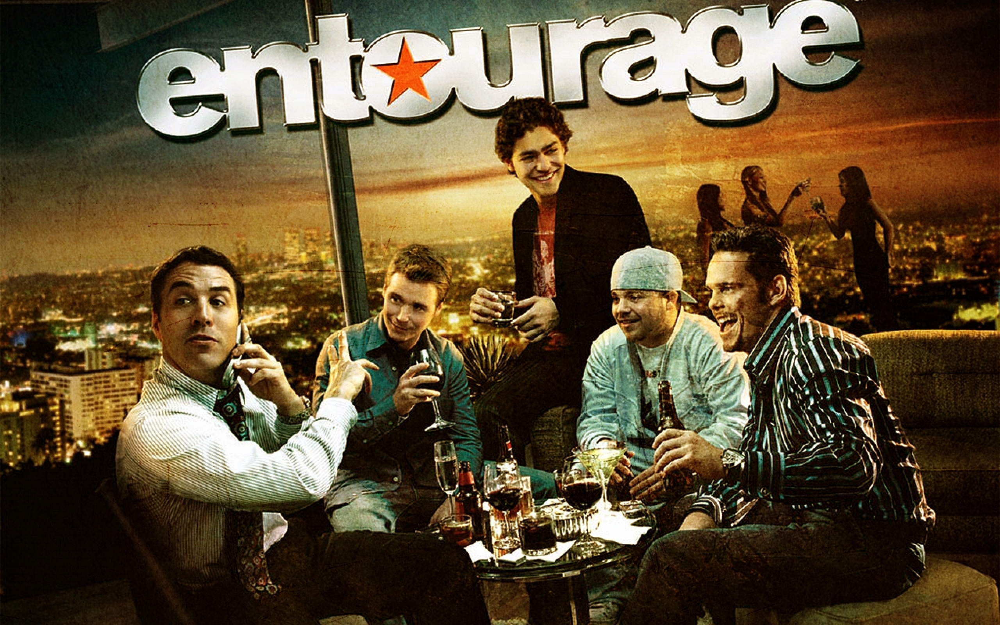
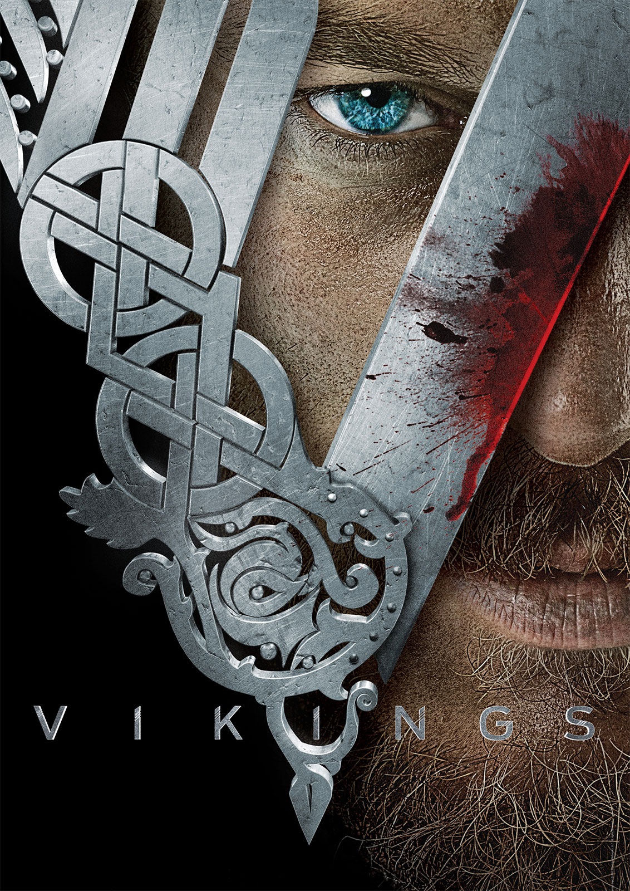
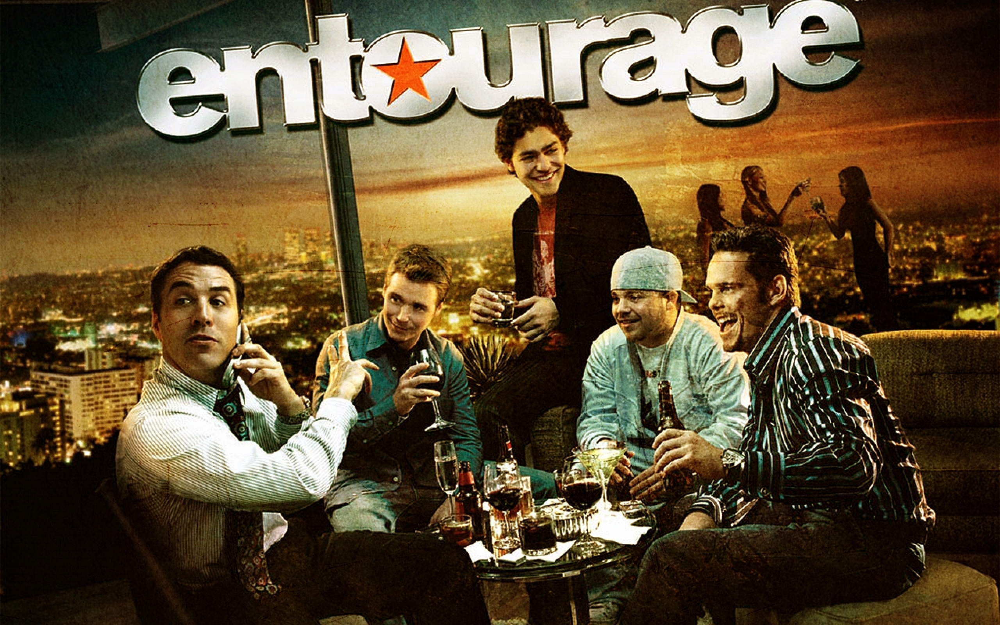
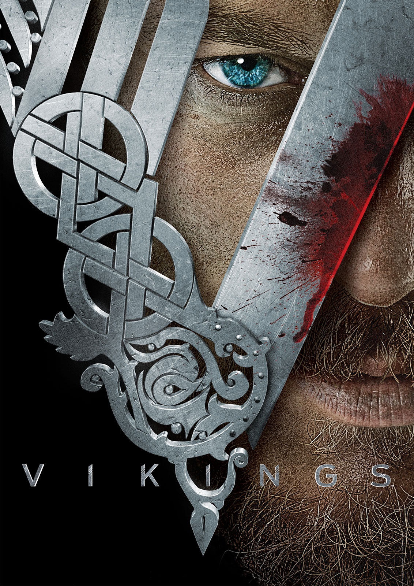

Persoonlijke gegevens
Familie : 1 broer en 2 zussen(Willem, Laura en Lien)
Huisdieren : Een hond en 4 kippen .
Hobby's : Gamen, met de hond gaan wandelen.
Favoriete muziek : Ik heb geen favoriete muziek. Ik vind in zeer veel genres nummers goed.
Favoritete groep /zanger/zangeres Geen.
Favoriete series :
Game of Thrones Entourage Vikings
 


